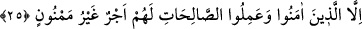

müjdelendiğine işâret vardır. Çünkü tahsis boşuna yapılıp söylenmiş bir ifâde değildir.
(Mademki kâfirlere elim azap müjdeleniyor, o halde bunun zıddından mü’minlere
rahatlatıcı sevabın müjdeleneceği çıkıyor.) Bu nedenle Allah Teâlâ yirmibeşinci ve son
âyette şöyle buyuruyor:
25. İman edip sâlih amel işleyenler başkadır; onlar için arkası kesilmeyen bir
mükâfat vardır.
Sadık olup aynı zamanda nefsin sıfatlarının bulanıklığından kalplerini tasfiye ederek,
yakinî bir îmanla “îman edip, sâlih amel” lerden emredilen taatleri “işleyenler” ve
faziletleri kazananlar “başkadır, onlar için” âhirette “arkası kesilmeyen bir mükâfat
vardır.” Yani arkası hiç kesilmeyen, tam tersine devam edip giden mükâfat vardır.
Âyetteki “memnûn” kelimesi kesmek anlamına gelen “menne” kökünden türemedir. Bu
durumda âyetin mânâsı “arkası kesilmeyen mükâfat” şeklindedir. Bu âyetin “başa
kakılmayan mükâfat” şeklinde anlaşılması da mümkündür. Bu durumda kelime başa
kakmak anlamına gelen “minnet” kökünden türemiş olur. Başa kakmak ise nimete eren
kimseyi bulandırır ve o nimetin boğazında düğümlenmesine sebeb olur. Burada
verdiğimiz iki mânâdan birincisi daha ağırlıklıdır. Herhalde ikinci mânâdan maksad ise
sevabın verilmesidir. Çünkü ecir ve sevaba erişen kimse, buna ancak ameli ve itâatıyla
lâyık olur. Bu hak ediş her ne kadar Allah’ın fazlı ve ihsanı ile gerçekleşmiş ise de kişi
buna ameli ve Rabbine itâatıyla lâyık olur. Kişinin ecre ve sevaba lâyık olması Allah’ın
ihsanı sâyesindedir. Çünkü ona o ameli işleme kudretini veren Allah’tır. Yine o amelin
bu şekilde işleneceğine yol gösterilmesi Allah’ın fazlı ve ihsanı sâyesindedir.
Hasan Basrî (k.s.) buyurmuştur ki; öyle kimseler gördüm ki dünya malı konusunda
oldukça cömert ve bağış sâhibi idiler. Bütün dünyayı verir ancak minnet etmezlerdi.
Ancak bu kimseler kendi “vakitleri” konusunda öyle cimriydiler ki kendi zamanlarından
bir nefesi bile ne babasına ne de çocuklarına verirlerdi.
Kâşâni bu âyeti şöyle tefsir ediyor: Onların nefis ve kalp cennetinde sıfat ve âsârın
sevabından ecirleri vardır. Bu ecirleri olma ve bozulmadan beri oldukları ve maddeden
tecerrüd ettikleri için hiç kesilmez.
et-Te’vilâtü’n-Necmiyye’de bu âyetten şu işâretler çıkarılıyor: İman edip dünyadan
yüz çevirmek ve Allah’a yönelmek sûretiyle sâlih amel işleyenlerin ruh, sırr, kalp ve
bunların ruhâni kuvvetlerinden başa kakmasız ecirleri vardır. Onların ecirlerinde nefis,
çalışma ve kazanmalarının en ufak bir payı yoktur. Onlar bu ecri sâdece Allah Teâlâ’nın
ihsan ve rahmeti sâyesinde alırlar.
Âlimlerden birisi şöyle der: Kur’an’da bu üç sûrenin ardarda tertip edilmesinin
hikmeti şudur: İnfitar sûresinde amelleri yazan hafaza melekleri; Mutaffifin sûresinde bu